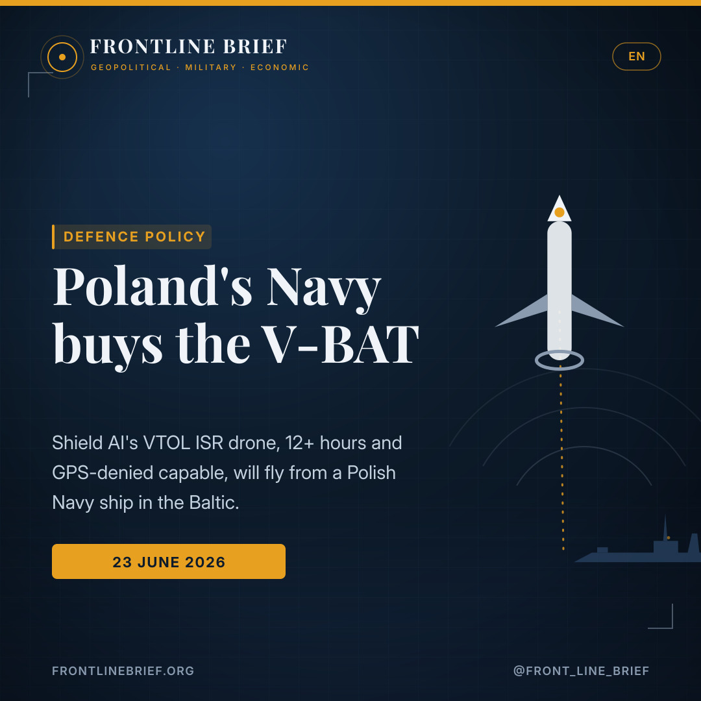

Poland buys the V-BAT: Shield AI's VTOL drone goes to sea with the Polish Navy
Poland's Armament Agency has signed for Shield AI's V-BAT vertical take-off drone to support Polish Navy operations, flying ISR missions from a warship in the Baltic. Proven in Ukraine and built for GPS-denied seas, it is a low-cost set of eyes for exactly the contested waters now worrying NATO.



Eyes from a warship
Poland's Armament Agency has signed for Shield AI V-BAT VTOL drones to support Polish Navy operations. The force will deploy aboard a Polish Navy vessel for maritime domain awareness and ISR.
NATO Class I VTOL
A ducted-fan VTOL drone with 12+ hours of endurance and a heavy-fuel engine, launching and recovering from ship decks. It delivers ISR and targeting at far lower cost than Class II and III systems.
A force multiplier
Proven in Ukraine and in GPS-denied conditions, V-BAT is pitched at the Baltic, where threats to energy and communications infrastructure are rising. Greece and the Netherlands already operate it.
Poland picks the V-BAT
Shield AI has announced that Poland's Armament Agency has signed a contract to acquire V-BAT vertical take-off and landing (VTOL) drones to support Polish Navy operations. The V-BAT force will be deployed aboard a Polish Navy vessel, providing maritime domain awareness and intelligence, surveillance and reconnaissance (ISR). Shield AI frames it as a proven, low-cost unmanned system that improves commanders' visibility of activity and threats at sea.
A drone built for the deck
V-BAT is a NATO Class I VTOL unmanned aircraft with a ducted-fan design, more than 12 hours of endurance and a heavy-fuel engine. Its single-engine, enclosed-rotor layout allows safe, unassisted launch and recovery from ship decks, rooftops and austere sites, which makes it well suited to maritime and expeditionary work. Crucially, it delivers ISR and targeting at significantly lower cost and logistical burden than larger NATO Class II and III systems.
Against threats to undersea cables and energy links, persistent and affordable awareness is the scarce commodity — and that is what the V-BAT sells.
Why the Baltic
The choice is shaped by geography. "V-BAT has proven its capabilities in Ukraine and beyond, particularly in environments where communications and GPS links are disrupted or denied," said Ryan Tseng, Shield AI's president and co-founder. Operations in the Baltic Sea, where threats against critical energy and communications infrastructure are becoming more frequent, demand reliable sensor platforms in all weather conditions and sea states. Tseng called the system a force multiplier for Poland, Baltic Sea nations and NATO.
A growing club — including Greece
Poland joins a widening group of V-BAT operators. In Europe, Greece and the Netherlands have already moved to field the drone, while further afield the US Navy and the Japan Maritime Self-Defense Force have selected it for ISR missions. The pattern points to a shared bet: that a cheap, ship-launchable, jam-resistant ISR drone is becoming a standard tool for navies watching contested seas.
The bottom line
For Poland, the V-BAT adds eyes over the Baltic at a fraction of the cost and footprint of larger systems, in exactly the conditions — electronic warfare, GPS denial, hostile weather — where bigger platforms struggle. It is a modest contract with an outsized logic: against the threats now massing around undersea cables and energy links, persistent, affordable awareness is the commodity in shortest supply.
Η Πολωνία επιλέγει το V-BAT
Η Shield AI ανακοίνωσε ότι η Υπηρεσία Εξοπλισμών της Πολωνίας υπέγραψε σύμβαση για την απόκτηση μη επανδρωμένων αεροσκαφών κάθετης απογείωσης και προσγείωσης (VTOL) V-BAT προς υποστήριξη των επιχειρήσεων του Πολωνικού Ναυτικού. Η δύναμη των V-BAT θα αναπτυχθεί επί πλοίου του Πολωνικού Ναυτικού, παρέχοντας εικόνα του θαλάσσιου πεδίου και δυνατότητες πληροφοριών, επιτήρησης και αναγνώρισης (ISR). Η Shield AI το παρουσιάζει ως ένα δοκιμασμένο, χαμηλού κόστους μη επανδρωμένο σύστημα που βελτιώνει την εικόνα των διοικητών για τη δραστηριότητα και τις απειλές στη θάλασσα.
Ένα drone φτιαγμένο για το κατάστρωμα
Το V-BAT είναι μη επανδρωμένο αεροσκάφος VTOL κατηγορίας NATO Class I, με σχεδίαση ducted-fan, αυτονομία άνω των 12 ωρών και κινητήρα βαρέος καυσίμου. Η διάταξη μονού κινητήρα με εσωκλειόμενο ρότορα επιτρέπει ασφαλή, αυτόνομη απογείωση και προσγείωση από καταστρώματα πλοίων, ταράτσες και πρόχειρα σημεία, κάτι που το καθιστά ιδιαίτερα κατάλληλο για ναυτικές και εκστρατευτικές αποστολές. Κυρίως, προσφέρει ISR και απόκτηση στόχων με σημαντικά χαμηλότερο κόστος και υλικοτεχνικό βάρος από τα μεγαλύτερα συστήματα Class II και III.
Απέναντι στις απειλές κατά υποθαλάσσιων καλωδίων και ενεργειακών συνδέσεων, η διαρκής και οικονομικά προσιτή εικόνα είναι το σπάνιο αγαθό — και αυτό ακριβώς πουλά το V-BAT.
Γιατί η Βαλτική
Η επιλογή καθορίζεται από τη γεωγραφία. «Το V-BAT έχει αποδείξει τις δυνατότητές του στην Ουκρανία και αλλού, ιδίως σε περιβάλλοντα όπου οι επικοινωνίες και οι ζεύξεις GPS παρεμβάλλονται ή παρεμποδίζονται», δήλωσε ο Ryan Tseng, πρόεδρος και συνιδρυτής της Shield AI. Οι επιχειρήσεις στη Βαλτική, όπου οι απειλές κατά κρίσιμων ενεργειακών και επικοινωνιακών υποδομών γίνονται όλο και συχνότερες, απαιτούν αξιόπιστες πλατφόρμες αισθητήρων σε κάθε καιρική κατάσταση και κατάσταση θάλασσας. Ο Tseng χαρακτήρισε το σύστημα πολλαπλασιαστή ισχύος για την Πολωνία, τα κράτη της Βαλτικής και το ΝΑΤΟ.
Μια διευρυνόμενη λέσχη — με την Ελλάδα μέσα
Η Πολωνία εντάσσεται σε μια διευρυνόμενη ομάδα χρηστών του V-BAT. Στην Ευρώπη, η Ελλάδα και η Ολλανδία έχουν ήδη προχωρήσει στην απόκτησή του, ενώ πιο μακριά το Ναυτικό των ΗΠΑ και οι Ιαπωνικές Θαλάσσιες Δυνάμεις Αυτοάμυνας το έχουν επιλέξει για αποστολές ISR. Το μοτίβο δείχνει ένα κοινό στοίχημα: ότι ένα φθηνό, εκτοξεύσιμο από πλοίο, ανθεκτικό στις παρεμβολές drone ISR γίνεται τυπικό εργαλείο για ναυτικά που επιτηρούν αμφισβητούμενες θάλασσες.
Το συμπέρασμα
Για την Πολωνία, το V-BAT προσθέτει «μάτια» πάνω από τη Βαλτική με κλάσμα του κόστους και του αποτυπώματος μεγαλύτερων συστημάτων, ακριβώς στις συνθήκες —ηλεκτρονικός πόλεμος, παρεμβολή GPS, αντίξοος καιρός— όπου οι μεγαλύτερες πλατφόρμες δυσκολεύονται. Είναι μια μετριοπαθής σύμβαση με δυσανάλογη λογική: απέναντι στις απειλές που συγκεντρώνονται γύρω από υποθαλάσσια καλώδια και ενεργειακές ζεύξεις, η διαρκής και προσιτή εικόνα είναι το αγαθό σε μεγαλύτερη έλλειψη.
La Pologne choisit le V-BAT
Shield AI a annoncé que l'Agence de l'armement polonaise a signé un contrat pour l'acquisition de drones à décollage et atterrissage verticaux (VTOL) V-BAT destinés à appuyer les opérations de la marine polonaise. La force de V-BAT sera déployée à bord d'un navire de la marine polonaise, fournissant une connaissance du domaine maritime et des capacités de renseignement, surveillance et reconnaissance (ISR). Shield AI le présente comme un système sans pilote éprouvé et peu coûteux, qui améliore la vision des commandants sur l'activité et les menaces en mer.
Un drone conçu pour le pont
Le V-BAT est un aéronef sans pilote VTOL de classe OTAN I, à soufflante carénée, doté de plus de 12 heures d'autonomie et d'un moteur à carburant lourd. Son architecture monomoteur à rotor caréné permet un décollage et une récupération sûrs et autonomes depuis des ponts de navires, des toits et des sites sommaires, ce qui le rend très adapté aux missions maritimes et expéditionnaires. Surtout, il offre ISR et désignation à un coût et une charge logistique nettement inférieurs à ceux des systèmes de classe II et III.
Face aux menaces sur les câbles sous-marins et les liaisons énergétiques, la connaissance persistante et abordable est la denrée rare — et c'est précisément ce que vend le V-BAT.
Pourquoi la Baltique
Le choix est dicté par la géographie. « Le V-BAT a prouvé ses capacités en Ukraine et au-delà, en particulier dans des environnements où les communications et les liaisons GPS sont brouillées ou refusées », a déclaré Ryan Tseng, président et cofondateur de Shield AI. Les opérations en mer Baltique, où les menaces contre les infrastructures énergétiques et de communication critiques se multiplient, exigent des plateformes de capteurs fiables par tous les temps et tous les états de la mer. Tseng a qualifié le système de multiplicateur de force pour la Pologne, les pays de la Baltique et l'OTAN.
Un club grandissant — avec la Grèce
La Pologne rejoint un groupe croissant d'utilisateurs du V-BAT. En Europe, la Grèce et les Pays-Bas ont déjà entrepris de le déployer, tandis que plus loin l'US Navy et la Force maritime d'autodéfense japonaise l'ont retenu pour des missions ISR. Ce schéma traduit un pari commun : un drone ISR bon marché, lançable depuis un navire et résistant au brouillage devient un outil standard pour les marines surveillant des mers disputées.
En conclusion
Pour la Pologne, le V-BAT ajoute des yeux au-dessus de la Baltique pour une fraction du coût et de l'empreinte des grands systèmes, précisément dans les conditions — guerre électronique, refus GPS, météo hostile — où les plateformes plus lourdes peinent. C'est un contrat modeste à la logique démesurée : face aux menaces qui s'accumulent autour des câbles sous-marins et des liaisons énergétiques, la connaissance persistante et abordable est la denrée la plus rare.
Polen vælger V-BAT
Shield AI har meddelt, at Polens våbenagentur har underskrevet en kontrakt om anskaffelse af V-BAT-droner med lodret start og landing (VTOL) til støtte for den polske flådes operationer. V-BAT-styrken vil blive indsat om bord på et polsk flådefartøj og levere maritim situationsforståelse og efterretning, overvågning og rekognoscering (ISR). Shield AI fremstiller det som et gennemprøvet, billigt ubemandet system, der forbedrer chefers indblik i aktivitet og trusler til søs.
En drone bygget til dækket
V-BAT er et NATO Class I VTOL-ubemandet fly med kanaliseret-fan-design, mere end 12 timers udholdenhed og en tungbrændstofsmotor. Dens enmotors, indkapslede rotorlayout muliggør sikker, uassisteret start og landing fra skibsdæk, tage og primitive steder, hvilket gør den velegnet til maritime og ekspeditionsmæssige opgaver. Afgørende leverer den ISR og målfatning til betydeligt lavere omkostninger og logistisk byrde end større Class II- og III-systemer.
Mod trusler mod undersøiske kabler og energiforbindelser er vedvarende og overkommelig situationsforståelse den knappe vare — og det er præcis, hvad V-BAT sælger.
Hvorfor Østersøen
Valget er formet af geografi. »V-BAT har bevist sine evner i Ukraine og derudover, især i miljøer, hvor kommunikation og GPS-forbindelser forstyrres eller nægtes,« sagde Ryan Tseng, præsident og medstifter af Shield AI. Operationer i Østersøen, hvor trusler mod kritisk energi- og kommunikationsinfrastruktur bliver hyppigere, kræver pålidelige sensorplatforme i alt vejr og alle søtilstande. Tseng kaldte systemet en styrkemultiplikator for Polen, Østersølandene og NATO.
En voksende klub — med Grækenland
Polen slutter sig til en voksende gruppe af V-BAT-operatører. I Europa har Grækenland og Holland allerede taget skridt til at indsætte dronen, mens USA's flåde og Japans maritime selvforsvarsstyrke længere væk har valgt den til ISR-missioner. Mønsteret peger på et fælles væddemål: at en billig, skibsaffyrbar, støjresistent ISR-drone bliver et standardværktøj for flåder, der overvåger omstridte farvande.
Bundlinjen
For Polen tilføjer V-BAT øjne over Østersøen til en brøkdel af omkostningerne og aftrykket af større systemer, netop under de forhold — elektronisk krigsførelse, GPS-nægtelse, barskt vejr — hvor større platforme har svært ved det. Det er en beskeden kontrakt med en overdimensioneret logik: mod de trusler, der nu samler sig omkring undersøiske kabler og energiforbindelser, er vedvarende, overkommelig situationsforståelse den vare, der er mindst af.
Polen väljer V-BAT
Shield AI har meddelat att Polens materielmyndighet har undertecknat ett kontrakt om anskaffning av V-BAT-drönare med vertikal start och landning (VTOL) för att stödja den polska flottans operationer. V-BAT-styrkan kommer att sättas in ombord på ett polskt örlogsfartyg och ge maritim lägesbild samt underrättelse, övervakning och spaning (ISR). Shield AI framställer den som ett beprövat, billigt obemannat system som förbättrar chefers insyn i aktivitet och hot till sjöss.
En drönare byggd för däcket
V-BAT är ett obemannat VTOL-flygplan i Nato Class I, med kanalfläktdesign, mer än 12 timmars uthållighet och en tungbränslemotor. Dess enmotoriga, inkapslade rotorlayout möjliggör säker, obistånd start och landning från fartygsdäck, tak och enkla platser, vilket gör den väl lämpad för marina och expeditionära uppdrag. Avgörande är att den levererar ISR och målangivning till betydligt lägre kostnad och logistisk börda än större Class II- och III-system.
Mot hot mot undervattenskablar och energilänkar är ihållande och prisvärd lägesbild den knappa varan — och det är just vad V-BAT säljer.
Varför Östersjön
Valet formas av geografin. ”V-BAT har bevisat sin förmåga i Ukraina och därutöver, särskilt i miljöer där kommunikation och GPS-länkar störs eller nekas”, sade Ryan Tseng, ordförande och medgrundare av Shield AI. Operationer i Östersjön, där hoten mot kritisk energi- och kommunikationsinfrastruktur blir allt vanligare, kräver pålitliga sensorplattformar i alla väder och sjötillstånd. Tseng kallade systemet en styrkemultiplikator för Polen, Östersjöländerna och Nato.
En växande klubb — med Grekland
Polen ansluter sig till en växande grupp V-BAT-operatörer. I Europa har Grekland och Nederländerna redan börjat sätta in drönaren, medan längre bort USA:s flotta och Japans maritima självförsvarsstyrka har valt den för ISR-uppdrag. Mönstret pekar på ett gemensamt vad: att en billig, fartygsstartad, störningstålig ISR-drönare blir ett standardverktyg för flottor som bevakar omstridda hav.
Slutsatsen
För Polen ger V-BAT ögon över Östersjön till en bråkdel av kostnaden och avtrycket för större system, just under de förhållanden — elektronisk krigföring, GPS-nekande, hårt väder — där tyngre plattformar kämpar. Det är ett blygsamt kontrakt med en oproportionerlig logik: mot de hot som nu samlas kring undervattenskablar och energilänkar är ihållande, prisvärd lägesbild den vara det råder störst brist på.
Sources
- Naval News — Shield AI's V-BAT to support Polish naval operations (23 June 2026)
- Shield AI — press release on the Polish Armament Agency V-BAT contract
- Naval News — Greece approves acquisition of V-BAT drones; Royal Netherlands Navy receives 12 V-BAT drones